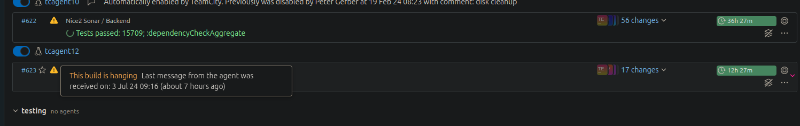

SELECT d.datname as "Name", pg_catalog.pg_get_userbyid(d.datdba) as "Owner", pg_catalog.pg_size_pretty(pg_catalog.pg_database_size(d.datname)) as "Size", LEFT(des.description, 20) AS "Description" FROM pg_catalog.pg_database d LEFT JOIN pg_shdescription des ON des.objoid = d.oid AND des.classoid = 'pg_database'::regclass JOIN pg_catalog.pg_tablespace t on d.dattablespace = t.oid WHERE d.datname LIKE '%nice_cwb%' ORDER BY "Size";
# restore from dumpfile (does not work when in psql context)
pg_restore -j 4 --role ${DB_USER} --no-owner --no-acl -d ${DB_NAME} ${DUMP_FILE_OR_DIRECTORY}
# Drop DB
DROP DATABASE ${DB_NAME};
#Create DB
CREATE DATABASE ${DB_NAME} WITH OWNER ${DB_USER};
Wenn wir im Geschäft eine Testumgebung mit einem Backup aus der Produktionsumgebung
wiederherstellen, dann ist es wichtig, dass wir je nachdem, welche Version die Produktionsumgebung
hat, ein neues Deployment der Testumgebung starten
Da diese möglicherweise nicht mit dem Stand der Produktionsumgebung übereinstimmt,
muss ein zusätzliches Deployment erstellt werden, um die Daten zu synchronisieren.
$ sudo -i
$ borg-repos
$ borg-2 list
#List data inside specific archive:
$ borg-2 list ::db-2024-04-26T04:12:02
ssh db4.tocco.cust.vshn.net sudo -i borg extract --stdout ::db-2025-01-08T04:12:02 var/lib/postgresql-backup/nice_hkvag.dump | ssh db5.stage.tocco.cust.vshn.net pg_restore --no-acl --no-owner --role nice_hkvagtest -d nice_hkvagtest_temp
CREATE DATABASE ${DB_NAME} WITH OWNER ${DB_USER};
ALTER DATABASE nice_{$CUSTOMER}test RENAME TO nice_{$CUSTOMER}test_old;
ALTER DATABASE nice_{$CUSTOMER}test_temp RENAME TO nice_{$CUSTOMER}test;
$ sudo -i
$ borg-repos
$ borg-2 list
#List data inside specific archive:
$ borg-2 list ::db-2024-04-26T04:12:02
# extract backup to folder currently in
$ borg extract ::db-2024-02-08T04:12:01 var/lib/postgresql-backup/nice_zb.dump
# find username
cat /etc/passwd
#change ownership
chown -R username:groupname directoryname
rsync -avz --progress -e ssh ${SSH-USER-SERVER}@${SERVERNAME}:/backup/On-server /destination/local
CREATE DATABASE ${DB_NAME} WITH OWNER ${DB_USER};
pg_restore -j 4 --role ${DB_USER} --no-owner --no-acl -d ${DB_NAME} ${DUMP_FILE_OR_DIRECTORY}
Via tco db-copy
Not sure if this is ever necessary, since there are not that many tables in the DB and we could probably just change the owners manually via ALTER TABLE command. - But if we have to do it for every table for ex. we could just copy it with the tco db-copy command like described in db-copy in : tco ( cp is an alias for db-copy )
- DB Problem 'need Admin rights....' could be resolved by the following change in db-role in ansible to change db-users PW or something, that occured when update DB-Server to postgres 17 - Gitlab-Commit
- Updates can be checke via link on the dashboard - Before updates we can download the current config as a backup
tcagents can run out of space sometimes, (should not be caused by docker-images anymore) "dur das, dass d build agents alles ime docker usfüehred, gits suscht eignetlich nöd vill anderi directories wo mer chönnt ufruume und denn gnueg platz würd chönne frei gäh" Pege setup a ansible job that cleans docker-images monthly There is also a build-step, that should remove old images
- we can go to /home/tocco/ on the Agent and run the ncdu . command to get an overview ( check disk usage at start with df -hT ) the ncdu output for a tcagents //home/tocco probably looks something like this:- However, the following locations tend to fill up from time to time:--- /home/tocco -------------------------------------------------------------------------------------------------------------- 30.5 GiB [##################] /.gradle 25.8 GiB [############### ] /.npm 18.5 GiB [########## ] /buildAgent 711.4 MiB [ ] /.m2 705.0 MiB [ ] /.cache 434.1 MiB [ ] /.sonar 163.8 MiB [ ] /.npm-cache 9.1 MiB [ ] /.node-gyp 4.6 MiB [ ] /.kube 1.0 MiB [ ] /.java 368.0 KiB [ ] /.ansible 28.0 KiB [ ] /.parallel 28.0 KiB [ ] /.ssh 20.0 KiB [ ] /.fop 16.0 KiB [ ] /.config 12.0 KiB [ ] .v8flags.5.1.281.98.ad431055a58cfbbb64a2bcef26bd2e7a.json 8.0 KiB [ ] /.gnupg 8.0 KiB [ ] /.docker 8.0 KiB [ ] .viminfo 8.0 KiB [ ] .v8flags.7.0.276.38-node.19.ad431055a58cfbbb64a2bcef26bd2e7a.json 8.0 KiB [ ] .v8flags.6.8.275.32-node.59.ad431055a58cfbbb64a2bcef26bd2e7a.json 8.0 KiB [ ] .bash_history 4.0 KiB [ ] .pdfbox.cache 4.0 KiB [ ] s 4.0 KiB [ ] .wget-hsts 4.0 KiB [ ] .gitconfig 4.0 KiB [ ] .lesshst
# check first, which files are selected with
find . -type f -name '*.out.log'
# add the '-delete' if sure about deleting
find . -type f -name '*.out.log' -delete
17.4 GiB [##################] /.tmp
11.1 GiB [########### ] /caches
1.7 GiB [# ] /wrapper
PEGE: Yeah, you can probably remove any thing that says cache and buildAgent/work can be removed too, it's some sort of cache too. Some of it will be recreated but hopefully not all of it.
- Builds get stuck sometimes, which end up in a hanging build
-On the runners /var/lib/docker/volumes/ might be full of: runner-xzsc2pyy-project-42516608-concurrent-0-cache-c33bcaa1fd2c77edfc3893b41966cea8 - to clean that we can run docker volume prune